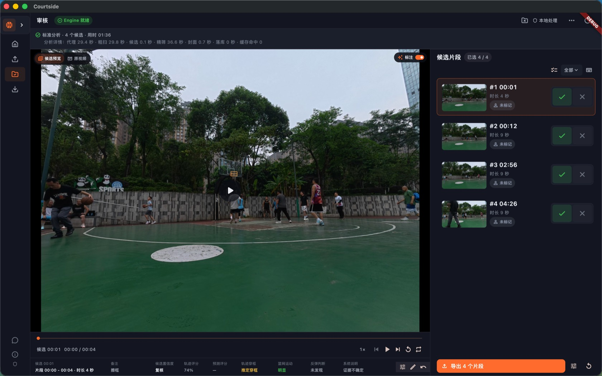

自动扫描疑似进球
针对固定机位、单篮筐的比赛视频生成候选；置信度不高的一律标出来等你看，不替你做主。
WORKFLOW
一场比赛一个文件，先选好要分析的范围。
自动识别为主，识别失败就手动框选、微调。
快速模式先看一版，重要比赛用标准模式细扫。
边播放边看，排除误检，前后秒数随手调。
合并成一条，或按球员、标签分别导出。

FEATURES
针对固定机位、单篮筐的比赛视频生成候选；置信度不高的一律标出来等你看，不替你做主。
快速模式先出一版粗结果，标准模式筛得更完整。审核和导出的流程完全一样。
张三、李四、三分、扣篮、犯规——标签自己定，批量标记，按标签导出个人集锦或整场集锦。
合并成一条集锦，或每个候选单独成片；导出完直接打开输出目录。
自动检测漏掉的片段，从原视频当前时间一键加入候选，不会丢。
不需要账号，不依赖在线接口，模型和推理都在本机跑，比赛视频留在本地。
DEMO
约 34 秒 · 存放在国内 OSS，页内直接播放
DOWNLOAD
桌面安装包同步存放在阿里云 OSS，国内直连下载；Android 测试包从 GitHub Release 下载。 最新版本 · 桌面端（macOS / Windows）已经过日常使用验证； Android 端提供 arm64-v8a 侧载测试包。
首次打开：BHE 上右键 → 打开（仅一次）。dmg 内附一键修复命令和说明。
首次打开：BHE 上右键 → 打开（仅一次）。dmg 内附一键修复命令和说明。
需要 Android 设备允许安装未知来源应用；当前为 debug-signed 测试包，不是 Google Play 正式版。
每个包在 GitHub Release 附带 .sha256 校验文件 · 备用下载： github.com/fly7632785/basketball-highlight-editor
HONEST SCOPE
候选是"疑似事件"，不是模型盖章的最终答案——这也是为什么审核台是整个产品的核心。
FAQ
分析、预览、审核、导出全部在本机完成，不需要账号，也不上传视频。下载安装包和查看文档需要网络。
开源项目，MIT 协议，不按时长、不限次数收费。模型和素材请遵守各自的授权条件。
候选默认全部保留，误检由你排除；时间边界可以拖动微调，漏掉的片段可以手动补。机器给的只是初稿。
Android 端已提供 arm64-v8a 侧载测试包（本地推理，无需联网），每次发布会同步到 GitHub Releases 和本页。iOS 暂无可下载版本。